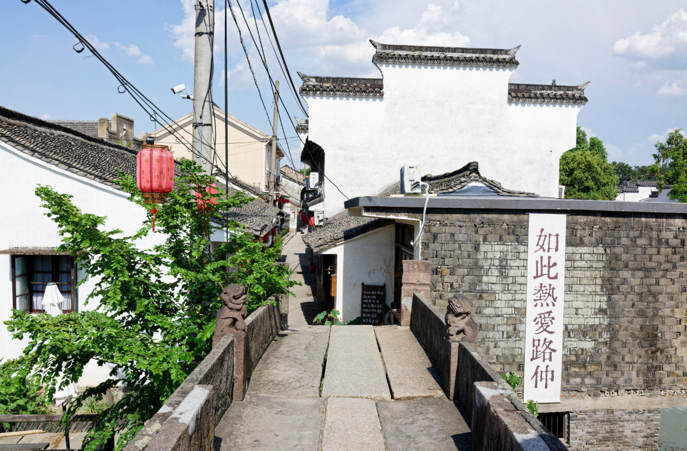
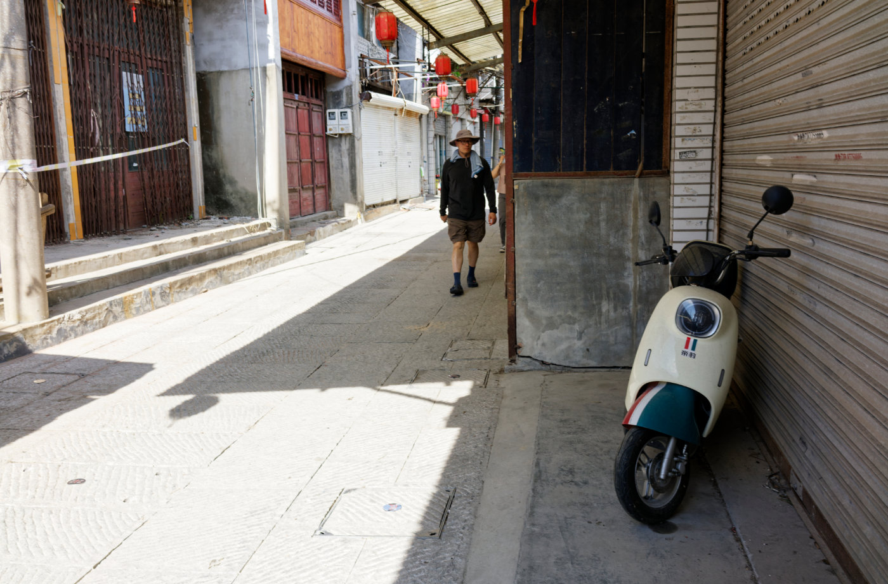
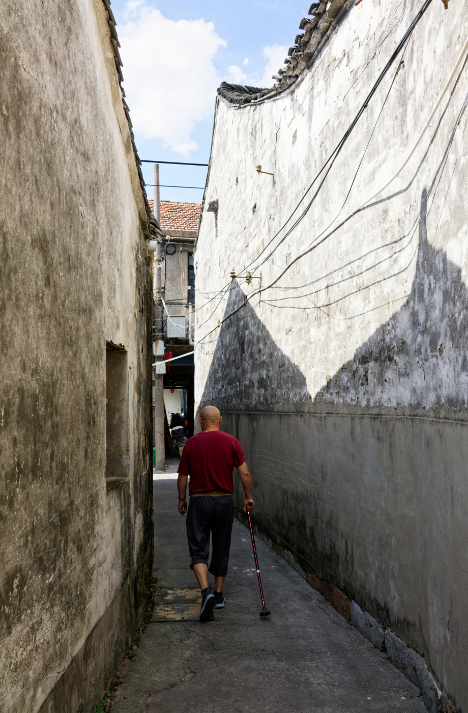
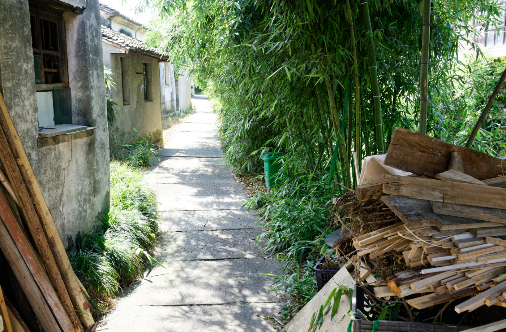
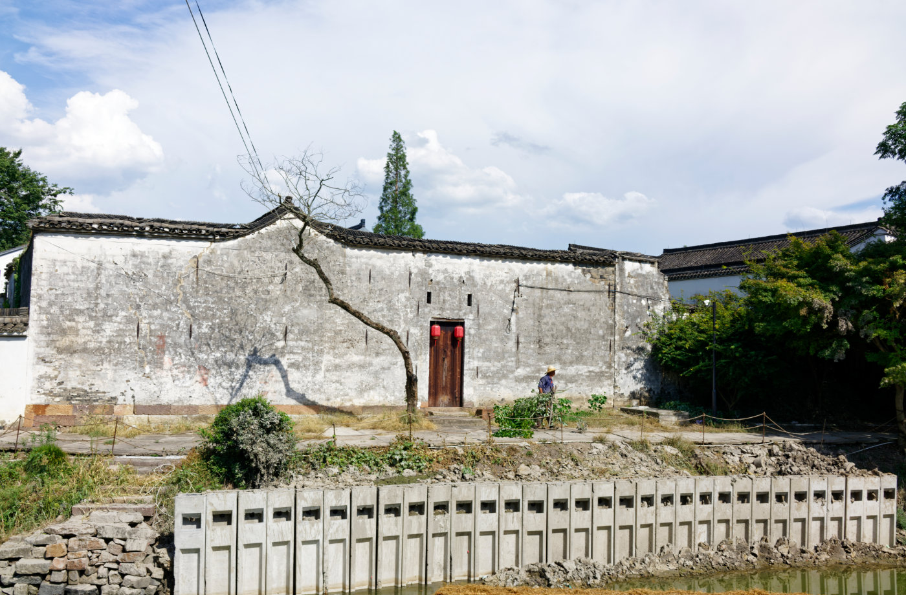
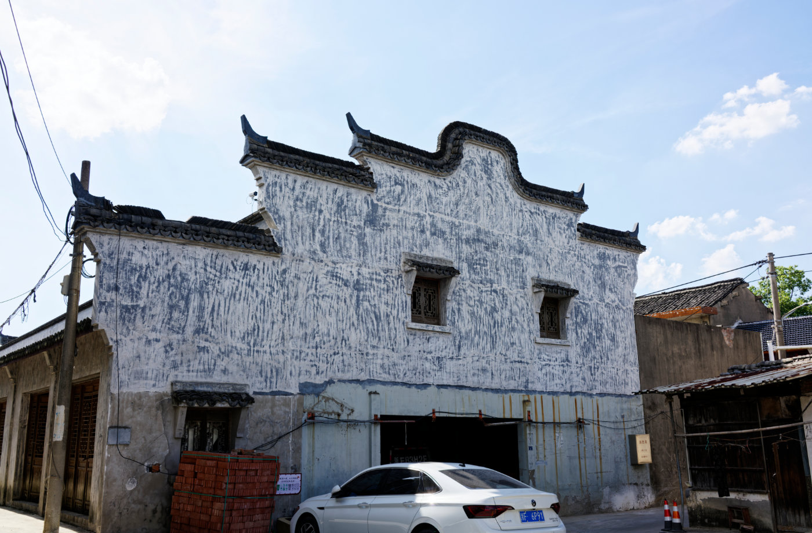

外拍活动NO.011 | 路仲古镇掠影
2026.08.19 · 摄影笔记 · 路仲·海宁·嘉兴 · Rx1RM2
到路仲时正是一天里最热的时候。强烈的阳光把白墙和石板路照得发亮，街上几乎没有什么人。我们沿着老街和小巷慢慢走了一圈，在修整过的古镇外表之外，也看见了一些仍然留在这里的日常。
那天到路仲时，我最先记住的是光。
盛夏午后的阳光很硬，白墙和石板路被照得发亮，街巷里几乎没有什么人。
老街显然经过重新修整，入口、店铺和街道都留下了规划与商业化的痕迹。但转进旁边的小巷，又能看到另一种样子：旧宅、竹林、堆在墙边的木料，以及仍然生活在这里的人。
我们没有停留太久。冒着近四十度的热浪走了一圈，三三两两的人，安静的街巷，还有偶尔按下的快门。
 从桥上望进路仲老街，白墙、石板路和临街店铺构成了古镇最整齐的一面。
从桥上望进路仲老街，白墙、石板路和临街店铺构成了古镇最整齐的一面。

沿着石板路往里走，修整过的街巷在正午阳光下显得格外安静。

一条几乎没有行人的街巷，停在墙边的电动车和远处的人影留下了一点生活气息。

转进狭窄的小巷，前面的人很快消失在白墙与阴影之间。

竹林旁的小路、旧屋和堆放的木料，是古镇整理过的街面之外更日常的一角。

临水的老宅与斑驳白墙，在强烈的夏日阳光下显出岁月留下的痕迹。

一栋仍保留旧轮廓的民居，门窗、墙面和停在下面的汽车把不同年代叠在了一起。
往回走时碰到这位姑娘正在店铺窗口拍照。我夸了一句“太美了”，她很爽快地让我蹭拍了一张。